A gen-application is a simple Python module (a single Python file) or package (a hierarchy of folders where every (sub-)folder contains a file named __init__.py). In the main gen presentation page, we've created a simple application in the form of a Python module, we've run it by installing Zope and Plone and by generating a Plone product. Working with a Python package instead of a Python module is quite easy: instead of creating MyModule.py in [myZopeInstance]/lib/python you simply create a folder "MyPackage" at the same place.
Within your Python module or package, you create standard Python classes. Those classes do not need to inherit from any base class provided by gen. If you want to turn a given class into a "gen-class" (= a class whose instances will be visualized, created and edited throug-the-web with Plone), you need to provide static attributes that will represent the associated data you need to edit and/or view through-the-web. Those attributes must be instances of any sub-class of appy.gen.Type. We will see that some attribute and method names are "reserved" for specific uses; all other methods and attributes you will define on "gen-classes" will be kept untouched by gen. "gen-classes" do not need any constructor at all, because instances will be created throug-the-web or via some gen-specific mechanisms that we will explain later.
What gen tries to do is to be as invisible as possible, by leaving your Python classes as "pure" as possible.
The code below shows an example of a gen-class.
from appy.gen import *
class A:
at1 = String()
at2 = Integer()
at3 = Float()
at4 = Date()
at5 = 'Hello'
def sayHello(self):
print self.at5 + str(self.at2)
String, Integer, Float and Date all inherit from appy.gen.Type. You may still define standard Python attributes like at5 and methods like sayHello. The list of basic types provided by gen is shown below.
| Integer | Holds an integer value. |
| Float | Holds a floating-point number. |
| String | Holds a string value (entered by the user, selected from a drop-down list, etc). |
| Boolean | Holds a boolean value (typically rendered as a checkbox). |
| Date | Holds a date (with or without hours and minutes). |
| File | Holds a binary file. |
| Ref | Holds references to one or more other objects. |
| Computed | Holds nothing; the field value is computed from a specified Python method. |
| Action | Holds nothing; the field represents a button or icon that triggers a function specified as a Python method. |
When defining instances of those types, you will typically give some parameters to it. Below is the list of parameters that are common to all types. In the next sections, we will see into more detail every type with its specificities.
| parameter | default value | explanation | ||||||||||||
|---|---|---|---|---|---|---|---|---|---|---|---|---|---|---|
| validator | None | A validator is something that restricts the valid range of values that the field may hold. It can be:
|
||||||||||||
| multiplicity | (0,1) | Multiplicity is a 2-tuple that represents the minimum and maximum number of values the field may hold. (0,1) means that the field may be empty or contain one value. (1,1) means that a value is required. For all types excepted Ref and some Strings, the maximum value must be 1. The Python value None is used for representing an unbounded value: (1,None) means "at least 1" (no upper bound). | ||||||||||||
| default | None | The default value for the field. The default value must be a Python value that corresponds to the Appy type. Correspondence with Python and Appy types is given here:
|
||||||||||||
| optional | False | When you define a field as optional, you may turn this field on or off in every flavour (a specific widget will be included in the flavour for this). If you turn the field on, it will appear in view/edit pages; else, it will completely disappear. This is one of the features that allow to tackle variability: in a given organisation the field may be used, in another one it may not. Or even within the same application, the field can be enabled in a given flavour and disabled in another. More information about this parameter may be found here. | ||||||||||||
| editDefault | False | When editDefault = True, a special widget will be present in every flavour; it will allow you to enter or edit the default value for the field. Instead of "hardcoding" the default value through parameter default, using editDefault allows to do it through-the-web, flavour by flavour. More information about this parameter may be found here. | ||||||||||||
| show | True | You may specify here a special condition under which the field will be visible or not. This condition may be:
|
||||||||||||
| page | main | By default, for every gen-class you define, gen will produce 2 views: one for consulting information about an instance, one for editing this information. If you have a limited number of fields, a single page is sufficient for displaying all fields on both views. You may also decide to create several pages. The default page is named "main". If, for this parameter, you specify another page, gen will automatically create it (on both views) and allow the user to navigate from one page to the other while consulting or editing an instance (every page will be represented as a tab). If you define several pages for a given class, the main page will take the internationalized name of the class (it corresponds to i18n label [full_class_name] in i18n domain plone, where [full_class_name] is the class name including the package prefix where dots have been replaced with underscores), and the other pages will take their names from i18n label [full_class_name]_page_[page_name] again in i18n domain plone. More information about pages may be found here; more information about i18n may be found here. | ||||||||||||
| group | None | Within every page, you may put widgets into "groups" that will be graphically rendered as fieldsets. Normally, widgets are rendered in the same order as the order of their declaration in the Python class; putting them into groups may change this behaviour. If you specify a string here, a group will be created and this field will be rendered into it on both views (consult/edit). The name of the group will correspond to i18n label [full_class_name]_group_[group_name] in i18n domain plone, where [full_class_name] is the class name including the package prefix where dots have been replaced with underscores. More information about i18n may be found here. If you add something like _[number] to the group name, widgets from the group will be rendered into columns; number being the number of columns in the group. For example, if you define several fields with parameter group="groupA_3", field values will be put in group groupA that will span 3 columns. If you specify different number of columns every time you use the group parameter for different fields, all numbers will be ignored excepted the one of the first field declaration. For subsequent field declarations, you don't need to specify the columns number again. More information about pages and groups may be found here. | ||||||||||||
| move | 0 | Normally, fields are rendered in consult/edit pages in the order of their declaration in the Python class. You may change this by specifying an integer value for the parameter move. For example, specifing move=-2 for a given field will move the field up to 2 positions in the list of field declarations. This feature may be useful when you have a class hierarchy and you want to place fields from a child class at a given position among the fields from a parent class. | ||||||||||||
| searchable | False | When defining a field as searchable, the field declaration will be registered in the low-level indexing mechanisms provided by Zope and Plone, allowing fast queries based on this field; the searches performed via the global "search" in Plone will take the field into account, too. | ||||||||||||
| specificReadPermission | None | By default, permission to read every field declared in a class is granted if the user has the right to read class instances as a whole. If you want this field to get its own "read" permission, set this parameter to True. More information about security may be found here; specific details about usage of this field may be found here. | ||||||||||||
| specificWritePermission | None | By default, permission to write (=edit) every field declared in a class is granted if the user has the right to create an edit instances as a whole. If you want this field to get its own "write" permission, set this parameter to True. More information about security may be found here; specific details about usage of this field may be found here. | ||||||||||||
| width | None | An integer value that represents the width of a widget. For the moment, it is only used for Strings whose format is String.LINE. For those Strings, default value is 50. | ||||||||||||
| master | None | Another field that will in some manner influence the current field (display it or not, for example). More information about master/slave relationships between fields may be found here. | ||||||||||||
| masterValue | None | If a master is specified (see previous parameter), this parameter specifies the value of the master field that will influence the current field (display it or not, for example). More information about master/slave relationships between fields may be found here. |
Integers and floats have no additional parameters. In this section, we will simply illustrate, on Integers and Floats, some parameters defined in the previous section. Let's consider the following class:
from appy.gen import *
class Zzz:
root = True
def show_f1(self): return True
def validate_i2(self, value):
if (value != None) and (value < 10):
return 'Value must be higher or equal to 10.'
return True
i1 = Integer(show=False)
i2 = Integer(validator = validate_i2)
f1 = Float(show=show_f1, page='other')
f2 = Float(multiplicity=(1,1))
Recall from the introduction that a class declared as root is of special importance: it represents a "main" concept in your application. For every root class, a tab is available in the dashboard for viewing, editing and deleting objects of this class.
Because i1 is defined with show=False, it will never appear on Appy views. i2 illustrates a validator method that prevents entered values to be lower than 10 (be careful: because the value is not mandatory (default multiplicity=(0,1)), validate_i2 will still be called even if value is None. f1 illustrates how to define a Python method for the show parameter; because this is a silly method that always return True, f1 will always be displayed. f1 will be displayed on another page named other. f2 will be mandatory. So when creating an instance of Zzz through-the-web, you get the following screen:
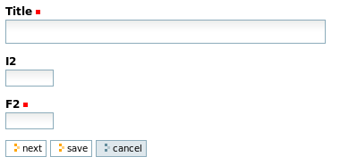
Plone needs a field named title; because you did not had any field named title in your class, Plone has added one automatically. This is because at several places Plone and gen use the title of objects. If you don't care about this, simply create an attribute title=String(multiplicity=(0,1), show=False). The field will disappear (don't forget to specify this multiplicity; else, the field will not show up but will still be mandatory: it will produce an error and you will be blocked); an internal title will be generated instead that will produce ugly results at some places: so it is not recommanded to do it. Let's see how the validation system behaves if we type a wrong value in i2 and nothing in f2:
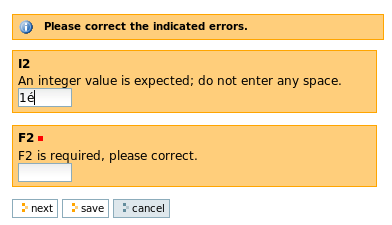
If we enter a value lower than 10 in i2 we get our specific error message:
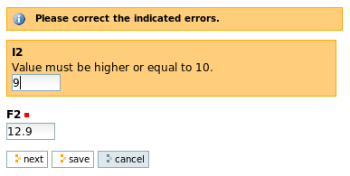
After corrections have been made, clicking on "next" will bring us to the second page where f1 lies.
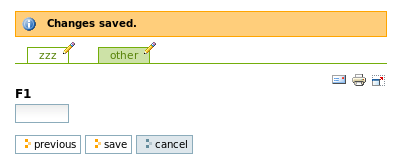
Now, through the green tabs, you may browse the 2 pages for any Zzz instance. Clicking into the tab will display the consult view, while clicking on the pen will bring the edit view. Going from one edit page to the other can also be done through "next" and "previous" buttons.
Beyond validation of specific fields, gen also allows to perform global, "inter-field" validation. More information here.
Strings have an additional attribute named format which may take the following values:
| value | default? | example | result (edit view) | result (consult view) |
|---|---|---|---|---|
| String.LINE | yes | oneLineString = String() | 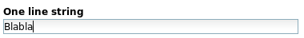 | 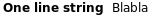 |
| String.TEXT | no | textString = String(format=String.TEXT) | 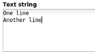 | 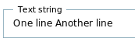 |
| String.XHTML | no | textXhtml = String(format=String.XHTML) | 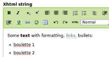 | 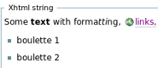 |
With Strings, adequate use of arguments validator and multiplicity may produce more widgets and/or behaviours. Consider the following class:
class SeveralStrings:
root=True
anEmail = String(validator=String.EMAIL)
anUrl = String(validator=String.URL)
anAlphanumericValue = String(validator=String.ALPHANUMERIC)
aSingleSelectedValue = String(validator=['valueA', 'valueB', 'valueC'])
aSingleMandatorySelectedValue = String(
validator=['valueX', 'valueY', 'valueZ'], multiplicity=(1,1))
aMultipleSelectedValue = String(
validator=['valueS', 'valueT', 'valueU', 'valueV'],
multiplicity=(1,None), searchable=True)
The edit view generated from this class looks like this:
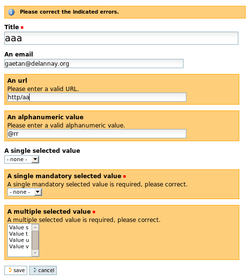
For field anEmail, a valid email was entered so the validation machinery does not complain. For anUrl and anAlphanumericValue (the 2 other predefined regular expressions for validating String fields shipped with gen) an error message is generated. The field aSingleSelectedValue uses a list of strings as validator and maximum multiplicity is 1: the generated widget is a listbox where a single value may be selected. The field aSingleMandatorySelectedValue is mandatory because of the multiplicity parameter being (1,1); a validation error is generated because no value was selected. The field aMultipleSelectedValue does not limit the maximum number of chosen values (multiplicity=(1,None)): the widget is a listbox where several values may be selected.
Field aMultipleSelectedValue has also been specified as searchable. Suppose we have created this instance of SeveralStrings:
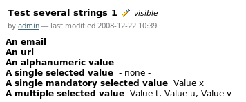
When using the Plone global search in the right top corner, you will notice that entering "Value u" will produce a match for our instance:
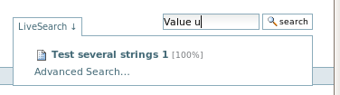
Entering "Value x" for example will produce no match at all because aSingleMandatorySelectedValue was not specified as searchable. Note that title fields are automatically set as searchable.
Booleans have no additional parameters. Specifying aBooleanValue = Boolean(default=True) will produce this on the edit view:
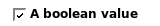
Dates have an additional attribute named format which may take the following values:
| value | default? | example | result (edit view) | result (consult view) |
|---|---|---|---|---|
| Date.WITH_HOUR | yes | dateWithHour = Date() | 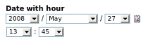 | 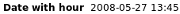 |
| Date.WITHOUT_HOUR | no | dateWithoutHour = Date(format=Date.WITHOUT_HOUR) | 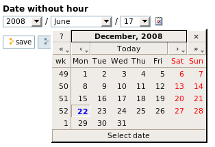 | 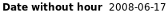 |
When editing a Date in any format, instead of using the listboxes for selecting values for year, month and day, you may click on the icon with a "12" on it: a nice Date chooser written in Javascript will pop up as shown above.
When specifying this: anAttachedFile = File() you get this result on the edit view when an object is being created:
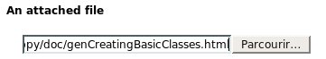
("Parcourir" means "Browse" in french). You get this result on the consult view:
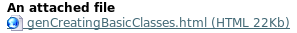
If you want to edit the corresponding object, you will get this:
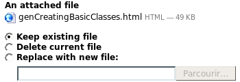
Any kind of file may be uploaded in File fields, but for png, jpg and gif files, you may specify an additional parameter isImage=True and your gen-ified Plone will render the image. Let's define this field:
anAttachedImage = File(isImage=True)
The consult view will render the image like on this example:
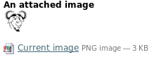
On the edit view, the widget that allows to modify the image will look like this:
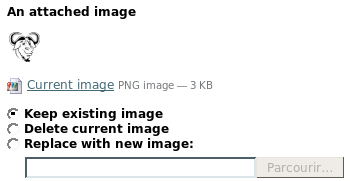
References allow to specify associations between classes in order to build webs of interrelated objects. Suppose you want to implement this association:
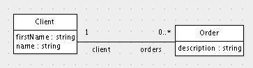
The corresponding gen model looks like this:
class Order:
description = String(format=String.TEXT)
class Client:
root = True
title = String(show=False)
firstName = String()
name = String()
orders = Ref(Order, add=True, link=False, multiplicity=(0,None),
back=Ref(attribute='client'))
def onEdit(self, created):
self.title = self.firstName + ' ' + self.name
Such an association is expressed in gen by 2 "crossed" Ref instances (see definition of attribute orders):
As implemented in gen, an association is always dyssymmetric: one association end is more "important" than the other and provides some functionalities like adding or linking objects. In the above example, the association end named orders allows to create and add new Order instances (add=True). In the generated product, once you have created a Client instance, for field orders you will get the following consult view:
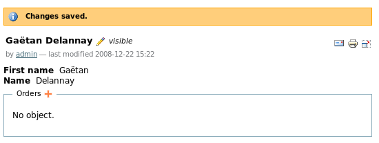
Remember that you can't get rid of the title field. So one elegant solution is to specify it as invisible (show=False) and compute it from other fields every time an object is created or updated (special method onEdit: when an object was just created, parameter created is True; when an object was just modified, created is False). Here, in both cases, we update the value of field title with firstName + ' ' + name.
On this view, because you specified add=True for field orders, the corresponding widget displays a "plus" icon for creating new Order instances and link them to you this client. Clicking on it will bring you to the edit view for Order:
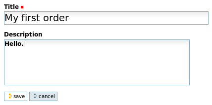
Saving the order brings you to the consult view for this order:
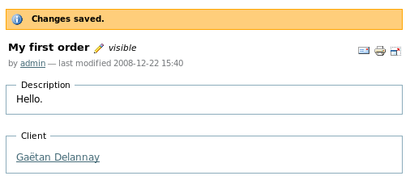
On this view, a specific widget was added (it corresponds to backward reference client) that allows you to walk to the linked object. Clicking on "Gaetan Delannay" will bring you back to him. After repeating this process several times, you will get a result that will look like this:
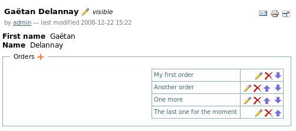
If you had specified multiplicity=(0,4) for field orders, the "plus" icon would have disappeared, preventing you from creating an invalid fifth order. Unlike standard Plone references, gen Ref fields are ordered; the arrows allow you to move them up or down. The other icons allow you to edit and delete them.
Besides the "add" functionality, association ends may also provide the "link" functionality. This produces another widget that allows you to link an object to existing ones instead of creating + linking them. Suppose you extend you model with the concept of Product: an order may now specify one or several products. The model would include the new Product class and the Order class would get an additional Ref field:
class Product:
root = True
description = String(format=String.TEXT)
class Order:
description = String(format=String.TEXT)
products = Ref(Product, add=False, link=True, multiplicity=(1,None),
back=Ref(attribute='orders'))
Tip: when making changes to you model, re-generate it, relaunch Zope, go to "site setup"-> Add/Remove Products" and reinstall the generated product. Another tip: any change you make to your Python code needs a Zope restart; else it will not be taken into account.
So now you are able to create products. Because you specified class Product with root=True, on the main dashboard for you application you get a new tab that allows you to consult and create products. After some product creations you will get a setting like this:
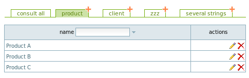
Now, if you go back to the first order made by Gaetan Delannay, and go to the edit view by clicking on the pen, a new widget will allow to select which products are concerned by this order:
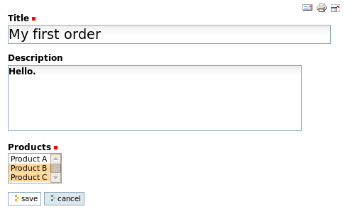
Clicking on "save" will bring you back to the consult view for this order:
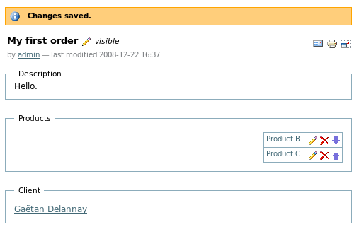
What is a bit annoying for the moment is that the Ref widget configured with add=True is rendered only on the consult view, while the Ref widget configured with link=True behaves "normally" and renders on both edit and consult views. This is a technical limitation; we will try to improve this in the near future. Another improvement will be to be able to select both add=True and link=True (this is not possible right now).
You will also notice that when defining an association, both Ref instances are defined in one place (=at the forward reference, like in products = Ref(Product, add=False, link=True, multiplicity=(1,None),back=Ref(attribute='orders'))). The main reason for this choice is to be able in the future to link gen-classes with external, standard Plone content types. The name of the backward reference is given in the attribute parameter of the backward Ref instance. For example, from a Product instance p you may get all orders related to it by typing p.orders. The consult view uses this feature and displays it:
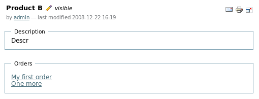
Rendering of backward references is currently less polished than forward references. If, for any reason, you don't want a backward reference to be visible, you can simply configure it like any other widget: back=Ref(attribute='orders', show=False)
Until now, all examples are done using the "admin" user. So for example all actions that one may trigger on objects (edit, delete, change order of references, etc) are enabled. We will present the security model that underlies Plone and gen later on; then we will be able to configure security.
For references, 2 more parameters allow to customize the way they are rendered: the boolean showHeaders and shownInfo. Let's consider again the consult view for a client (5 pictures above: gold client "Gaetan Delannay"). Beyond order's titles, I would like to display their description, too, in another column. But If I have several columns, it would be nice to get some columns headers. You may achieve the desired result by changing the definition of the field orders this way:
orders = Ref(Order, add=True, link=False, multiplicity=(0,None),
back=Ref(attribute='client'), showHeaders=True,
shownInfo=('description',))
showHeaders simply tells gen to display or not headers for the table; shownInfo specifies (in a list or tuple) names of fields to display for the referenced objects. By default, field title is always displayed; you don't have to specify it in shownInfo. Here's the result:
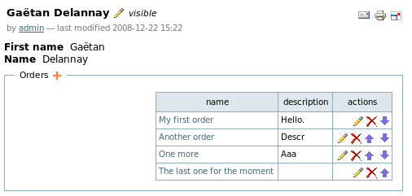
The shownInfo parameter may also be used with Refs specifying link=True. For Ref field products of class Order, specifying shownInfo=('description',) will produce this, when creating a new Order:
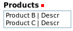
The title/name of the referred object always appears; here, the description also appears. If you want the title to appear at a different place, simply specify it in the shownInfo parameter. For example, specifying shownInfo=('description','title') will produce:
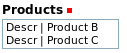
By adding parameter wide=True, Ref tables take all available space. Returning to the previous example, specifying this parameter will produce this:
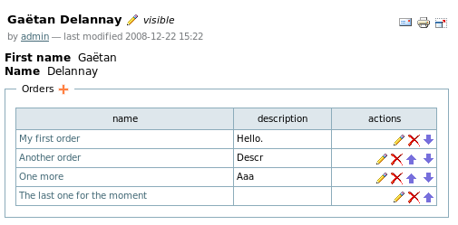
When using shownInfo, you may specify any field name, including Ref fields. If you specify shownInfo=('description', 'products') for the field orders of class Client and modify rendering of field products from class Order this way:
class Order:
description = String(format=String.TEXT)
products = Ref(Product, add=False, link=True, multiplicity=(1,None),
back=Ref(attribute='orders'), showHeaders=True,
shownInfo=('description',))
You will get this result:
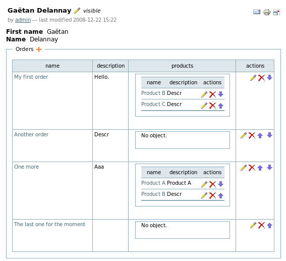
If, for field products, add=True was specified, on this screen you would have been able to add directly new products to orders through specific "plus" icons:
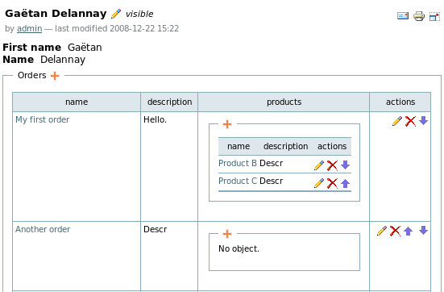
Let's consider again attribute products of class Order (with add=False and link=True). When specifying this, gen allows every Order to be associated with any Product defined in the whole Plone site (in this case, Product A, Product B and Product C):
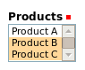
You may want to filter only some products instead of gathering all defined products. The select parameter may be used for this. Here is an example:
class Order:
description = String(format=String.TEXT)
def filterProducts(self, allProducts):
return [f for f in allProducts if f.description.find('Descr') != -1]
products = Ref(Product, add=False, link=True, multiplicity=(1,None),
back=Ref(attribute='orders'), showHeaders=True,
shownInfo=('description',), select=filterProducts)
This silly example only selects products whose description contains the word "Descr", which is only the case for Products Product B and Product C. So the "Products" widget will not contain Product A anymore:
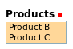
The use of the select attribute may cause performance problems for large numbers of objects; an alternative attribute may appear in the future.
If you want to define a field whose value is not hardcoded in the database, but depends on some computation, then you must use a Computed field. Computed fields have two main purposes:
Because computed fields, like any other field, may be displayed on dashboards, it allows you to make the latters even more appealing! (please note how good I am at marketing gen)
Let's try it on our example. Suppose we want to produce nice references for orders, based on some random number (yes, it would have been better to use some incremental number: it it really easy to do this with gen, but you need to know how to customize the configuration panel, which is explained later). We need to define a field number that will hold the order number and will be invisible. Then, we will define a Computed field named reference that will produce the reference based on some prefix and the order number. Class Order need to be updated like this:
class Order:
...
number = Float(show=False)
# Reference field
def getReference(self): return 'OR-%f' % self.number
reference = Computed(method=getReference)
...
def onEdit(self, created):
if created:
import random
self.number = random.random()
Method onEdit is used to generate the order number when the order is created. The reference field is a Computed field: parameter method specifies the Python method that will compute the field value. In this case, this value is simply the order number with some prefix. Now, let's create this order and see what happens:
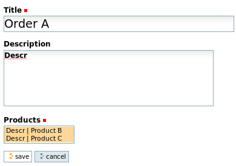
Computed fields do not appear on edit views, only on consult views. Clicking on "Save" will bring you to the following consult view:
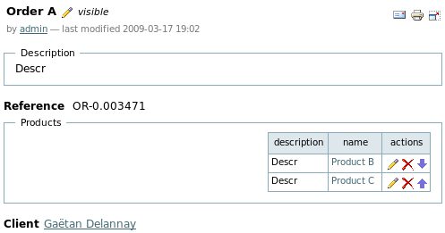
Like any other field, Computed fields may appear on Ref fields or on dashboards. For example, if we change the definition of Ref field orders on class Client this way:
class Client:
...
orders = Ref(Order, add=True, link=False, multiplicity=(0,None),
back=Ref(attribute='client'), showHeaders=True,
shownInfo=('reference', 'description', 'products'), wide=True)
order references will appear on the corresponding consult view:
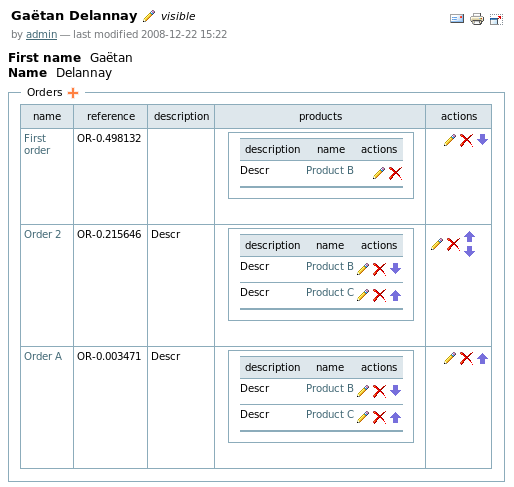
Python methods specified in attribute with may return HTML code.
Actions are special fields that allow to trigger functions. For the moment, they are represented as buttons and are shown only on consult views (not on edit views). Let's take an example. Suppose we modify class Product this way:
class Product:
root = True
description = String(format=String.TEXT)
stock = Integer()
def needOrder(self): return self.stock < 3
def orderProduct(self): self.stock = 3
order = Action(action=orderProduct, show=needOrder)
Firstly, we have added attribute stock, that allows us to know how many Product items we have in stock. Then, we have added a dummy action named order that allows us to re-order a product when the stock is too low. Suppose we have defined this product:
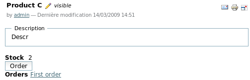
Because the stock is lower than 3, the order action (every action is defined as an instance of appy.gen.Action) is visible (because of parameter show of action order). The triggered behaviour is specified by a Python method given in parameter action. In this silly example, the action as the direct effect of setting stock to value 3. Clicking on button "order" will have this effect:
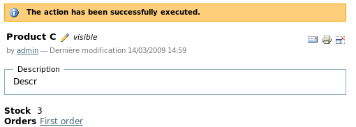
stock is equal to 3; the order action is not visible anymore (because the method specified in parameter show returns False.
Considering actions as "fields" is quite different from other frameworks or standard Plone. This has several advantages:
Note that the action parameter may hold a list/tuple of Python methods instead of a single method (like in the previous example).
In the example, you've seen that a standard message was rendered: "The action has been successfully executed.". If you want to change this message, please read the section on i18n first. In fact, for every action field, gen generates 2 i18n labels: [full_class_name]_[field_name]_action_ok and [full_class_name]_[field_name]_action_ko. The first is rendered when the action succeeds; the second one is rendered when the action fails. The action succeeds when the Python method given in the action parameter:
The action fails when the Python method returns False or if it raises an exception. In this latter case, the exception message is part of the rendered message.
If the action parameter specifies several Python methods, the action succeeds if all Python methods succeed.
If you need to render different messages under different circumstances, the 2 labels generated by gen may not be sufficient. This is why a Python method specified in an action parameter may return a 2-tuple instead of None, True or False. The first element of this tuple determines if the method succeeded or not (True or False); the second element is a string containing the specific message to render. If this latter must be i18n'ed, you can create your own i18n label and use the method translate as described here (near the end of the section). In the case of multiple Python methods, messages returned are concatenated.
The installation procedure for your gen-application is defined as an action. More information about this here.
In future gen releases, you will be able to define an icon as an alternative way to render the action. We will also add the concept of action parameters.
Remember that the ZODB is a kind of folder hierarchy; the Plone site itself is a "folderish" object within that hierarchy. For every gen-application, a folder is created within the Plone site object. All objects created through this application (with the exception of objects tied to the application "configuration", more info here) will be created within this folder.
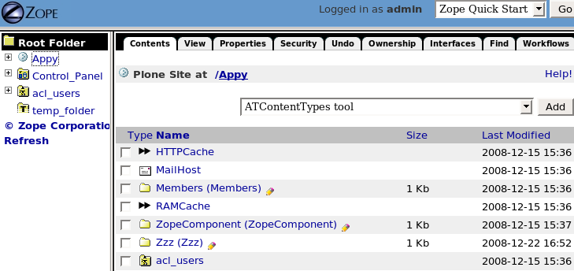
This screenshot shows the ZMI (Zope Management Interface) available at http://localhost:8080/manage. You see that within the Appy object (which is a Plone site) you have, among some predefined Plone objects like MailHost or Members, 2 folders named ZopeComponent and Zzz. Each of these 2 folders correspond to a gen-application that has the same name. Those folders are an Appy adaptation of the Plone standard content type named "Large Plone Folder", which is used for storing a large number of objects. If you click on this folder you will see its content (=all objects created through the corresponding gen-application). For several reasons, you may want to put more structure among this folder. Firstly, if you reach a large number of objects, it could lead to performance problems. Secondly, if you use the standard Plone "navigation" portlet, you will see in it all your objects in a single long and unstructured list under a single folder entry named according to your application. The solution is to tell gen that some classes are "folderish". You simply tell this by specifying folder=True on your class. Suppose you do this on class Client:
class Client:
root = True
folder = True
title = String(show=False)
firstName = String()
...
If now I start from a database with 3 products and 1 client and I add a new order I will get this:
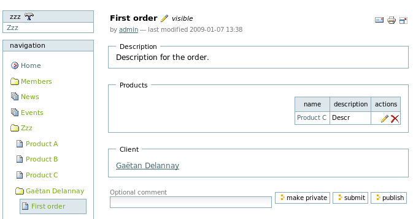
You see in the "navigation" portlet on the left that "Gaetan Delannay" is now a folder that "contains" the order "First order".
Note that instances of classes tagged with root=True will always be created in the root application folder.